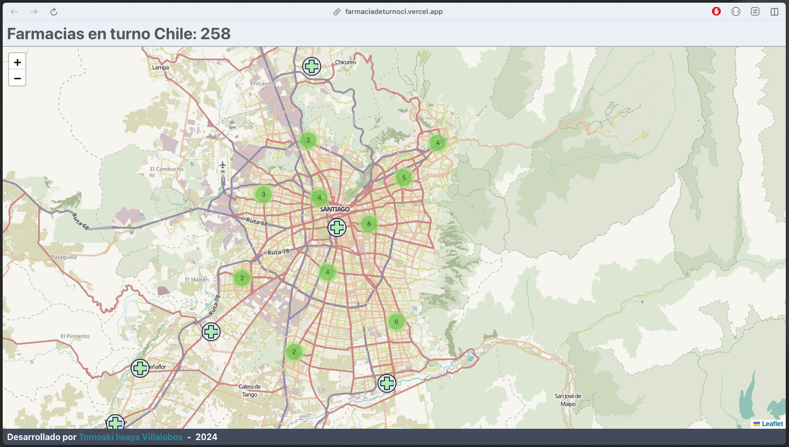

Aplicación web para la visualización de las farmacias en turno en Chile
Farmacias en turno - Chile permite visualizar qué farmacias se encuentran en turno dado el momento actual. Para obtener los datos se utiliza el endpoint proporcionado por MIDAS (Modernización de la Información Digital de la Autoridad Sanitaria)
Consiste en un front-end hecho con React desde el cual se realiza el request de los datos a la API antes mencionada, se manipulan de forma pertinente los datos y se muestran en un mapa (Leaflet). El código se encuentra en este repo.
Screenshots
